Chuyển đổi số
Alpha Software cách mạng hoá quản lý sản xuất dệt may qua việc phát triển phần mềm quản lý quy trình công nghệ một cách khoa học, thiết lập và triển khai kế hoạch sản xuất một cách trực quan, kết nối với các thiết bị sản xuất để tăng cường tự động hoá giúp nhà máy cải thiện chất lượng, tăng sản lượng và rút ngắn thời gian giao hàng.
Tìm hiểu thêmGiới thiệu phần mềm quản lý nhà máy dệt may của Alpha Software
Lập kế hoạch sản xuất trực quan
- Thao tác lập kế hoạch, điều chỉnh kế hoạch được thực hiện một cách dễ dàng nhanh chóng bằng cách kéo-thả.
- Khi có sự điều chỉnh kế hoạch của một mẻ hàng, toàn bộ bảng kế hoạch sẽ được tự động điều chỉnh theo. Điều này giúp bảng kế hoạch có sự đồng bộ tuyệt đối.
- Bảng triển khai kế hoạch tại nơi sản xuất thể hiện trực quan và kiểm soát việc tuân thủ trình tự đã được lập.
Quản lý công nghệ thông minh
- Có công cụ để người kỹ thuật trưởng lưu trữ tri thức công nghệ của công ty vào phần mềm.
- Phần mềm sẽ tìm kiếm chính xác công nghệ áp dụng cho mẻ hàng thông qua chỉ một cú click chuột. Điều này không những giúp công ty giảm được quy mô nhân sự có trình độ kỹ thuật cao mà còn giúp tất cả các mẻ hàng được xử lý với công nghệ đồng nhất, từ đó ổn định chất lượng.
Tích hợp với các thiết bị sản xuất, thiết bị phòng lab
- Với các thiết bị vận hành tự động nhưng độc lập, chúng tôi có thể giúp kết nối vào hệ thống phần mềm để hình thành một hệ thống nhất.
- Chúng tôi cũng có thể giúp cải tạo các thiết bị đang vận hành bằng tay thông qua công tắc và nút nhấn thành điều kiển tự động theo quy trình và kết nối với hệ thống phần mềm.
Tuỳ chỉnh phù hợp cho từng nhà máy
- Hiểu rằng mỗi nhà máy có hệ thống quản lý khác nhau, chúng tôi luôn khảo sát kỹ càng để thiết kế và triển khai cho phù hợp, liên tục cải tiến để giúp hoạt động của nhà máy ngày càng hiệu quả hơn.
- Bên cạnh đó, trong quá trình hợp tác, chúng tôi cũng có khả năng tư vấn cho khách hàng cải tiến quy trình để đạt hiệu quả và tiết kiệm.
Rất dễ sử dụng!
Chúng tôi luôn hướng đến cách vận hành phần mềm đơn giản nhất, cần ít thao tác nhất để người công nhân đứng máy, nhân viên văn phòng dù không có kiến thức tin học cơ bản vẫn có thể sử dụng được một cách dễ dàng.
Vì sao nhà máy nên chọn Alpha Software?
Cải thiện rõ rệt chất lượng sản phẩm
Nhờ kinh nghiệm từ thời gian dài làm kỹ thuật công nghệ trong ngành, chúng tôi biết cách ánh xạ tri thức công nghệ của chuyên gia nội bộ của nhà máy hoặc chuyên gia bên ngoài, áp dụng công nghệ đó một cách tự động, chính xác vào sản xuất nhờ đó cải thiện mạnh mẽ tỉ lệ sản phẩm đúng ngay từ đầu (RFT — Right First Time).
Giảm thiểu rủi ro sai sót của công nhân
Trải qua các vị trí công việc trong ngành từ quản lý kỹ thuật, quản lý dây chuyền đến quản lý nhà máy nhuộm, chúng tôi hiểu được những rủi ro sai sót có thể có trong quá trình thực hiện công việc của nhân viên các cấp. Nhờ đó, phần mềm của Alpha Software có khả năng ngăn ngừa lỗi rất cao.
Tối ưu chi phí nhân sự
Trong quá trình khảo sát và phát triển phần mềm, chúng tôi sẽ nhận diện những thao tác nào có thể được phần mềm tự động thực hiện. Nhờ đó làm giảm nhu cầu và chi phí nhân sự.
Tích hợp với các thiết bị có sẵn
Chúng tôi có trình độ và kinh nghiệm để kết nối với các thiết bị tự động hoặc cải tạo thiết bị đang vận hành bằng công tắc tay thành vận hành tự động. Nhờ đó giảm nhu cầu nhân sự có trình độ tay nghề cao và giảm thao tác sai của người vận hành.
Các dự án của Alpha Software
Các thành phần phần mềm:
- Quản lý sản xuất.
- Quản lý công nghệ. Có kết nối với đầu đo quang phổ Datacolor, máy hút màu phòng thí nghiệm Datacolor Autolab TF.
- Quản lý kho nguyên liệu, thành phẩm và bán thành phẩm.
- Cân thuốc nhuộm bán tự động.
Các thành phần phần mềm:
- Quản lý sản xuất.
- Quản lý công nghệ. Có kết nối với đầu đo quang phổ Datacolor, máy rót màu phòng thí nghiệm COPOWER CptLab.
- Quản lý kho nguyên liệu, thành phẩm và bán thành phẩm.
- Cân thuốc nhuộm bán tự động.
- Cân hoá chất bán tự động.
- Cải tạo điều khiển máy nhuộm từ vận hành bằng tay thành điều khiển tự động theo chương trình, kết nối trực tiếp và điều khiển từ phần mềm quản lý sản xuất.

Các thành phần phần mềm:
- Quản lý sản xuất.
- Quản lý công nghệ. Có kết nối với đầu đo quang phổ Datacolor, máy rót màu phòng thí nghiệm COPOWER CptLab.
- Quản lý kho nguyên liệu, thành phẩm và bán thành phẩm.
- Cân thuốc nhuộm bán tự động.
- Cân hoá chất bán tự động.
- Cải tiến chương trình trên bộ điều khiển Delta của máy nhuộm hiện hữu để kết nối và chuyển chương trình nhuộm, thể tích nước, tốc độ bơm chính từ phần mềm quản lý sản xuất.
Khách hàng nhận xét gì về Alpha Software?
Phần mềm Alpha đã giúp SPICA kết nối hiệu quả với các thiết bị nhuộm như máy Spectro, máy hút màu và controller máy nhuộm, từ đó giảm thiểu lỗi thao tác thủ công. Việc quản lý công thức nhuộm trở nên dễ dàng hơn, lập kế hoạch nhuộm chính xác và kiểm soát toàn bộ quy trình chặt chẽ qua mã QR và hệ thống báo cáo trực quan.
Sau khi triển khai phần mềm, tỷ lệ nhuộm đạt ngay lần đầu (RFT) tăng từ 80% lên 90% theo mẻ, và từ 90% lên 95% theo khối lượng – hướng đến mục tiêu đạt 93% và 98% trong thời gian tới.
Phần mềm Alpha Software hỗ trợ rất tốt cho công ty, nhất là công ty sản xuất nhiều công đoạn. Hơn nữa, Alpha thì có lợi thế hơn những phần mềm quản lý khác do có thể tuỳ biến linh hoạt và chi tiết theo yêu cầu của người sử dụng. Mọi thông số đều rất rõ ràng và chi tiết.
Câu chuyện của Alpha Software
Alpha Software được thành lập vào năm 2021 bởi Ông Phan Đức Tuấn Anh, người có hơn 28 năm kinh nghiệm thực tiễn trong lĩnh vực dệt may—trong đó có 13 năm là kỹ thuật viên nhuộm và 15 năm làm Giám đốc nhà máy. Với nền tảng vững chắc về Hoá học Hữu cơ cùng sự hiểu biết sâu sắc về quản lý nhà máy và phát triển phần mềm, ông Tuấn Anh đã giúp chúng tôi cung cấp các giải pháp công nghệ thực tiễn đáp ứng nhu cầu của các doanh nghiệp dệt may hiện đại.
Chúng tôi rất hân hạnh được hỗ trợ bạn
Hãy gọi 0983.50.50.02 để được chúng tôi tư vấn miễn phí hoặc gửi các câu hỏi của bạn cho chúng tôi qua địa chỉ email alphasoftware102@gmail.com
Yêu cầu bản Demo phần mềm